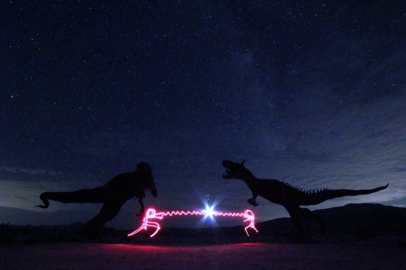

Blog
June 2023
This photo was taken on Sunday, July 16, 2023 at 11:30pm. Location: Anza-Borrego Desert State Park

110F degrees and nothing beats being out in the breeze to a dark ocean full of stars. Beneath that darkness each star slowly begins to light up and shine. Who knew they were there to begin with? That nothingness, darkness, yet comes peace. However sometimes those very moments like in our own lives, come during certain times of the month and day. According to the calendar, the New Moon phase is set within the week of June 17. It's uncertain that the skies will be clear despite how dark it will be. This night turned out to be cloudy and 10:00-11:00pm was the range to catch the Milky Way. Though not clearly visible to our own eyes, hazy, but definately capturable through a lens. There is so much to learn here and that will take me more time, but I am pretty excited. Until next time!